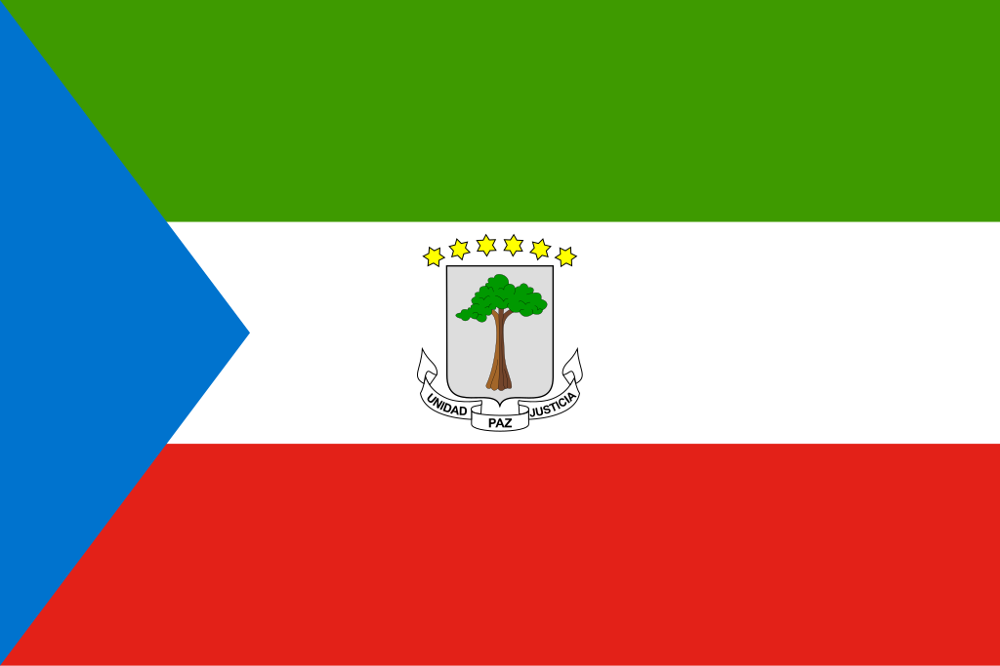

Guiné Equatorial
 A Guiné Equatorial, oficialmente República da Guiné Equatorial, é um país localizado na África Central, sendo o único país africano de língua oficial espanhola. Sua capital é Malabo, localizada na ilha de Bioko, embora a cidade de Oyala (também chamada Ciudad de la Paz) esteja em desenvolvimento para se tornar a nova capital administrativa. O país é formado por uma parte continental, chamada Rio Muni, e várias ilhas, sendo Bioko e Annobón as principais. Com cerca de 28 mil km², a Guiné Equatorial é um dos menores países da África. A população é composta por diversos grupos étnicos, incluindo os fang, bubi, ndowe e combe, cada um com tradições e línguas próprias. Historicamente, o território foi influenciado por colonizadores portugueses e, principalmente, espanhóis, tornando-se independente em 12 de outubro de 1968. O país possui uma das maiores rendas per capita da África Central devido à exploração de petróleo e gás natural, embora a riqueza esteja concentrada em poucas mãos. A Guiné Equatorial é membro da ONU, União Africana, CEDEAO, Comunidade dos Países de Língua Portuguesa (CPLP) e Organização de Países Exportadores de Petróleo (OPEP).
História
A história da Guiné Equatorial é marcada por diferentes povos indígenas e pela colonização europeia. Antes da chegada dos europeus, o território era habitado pelos bubi na ilha de Bioko e pelos fang no continente, que desenvolveram sociedades organizadas com práticas agrícolas, caça e pesca. O arquipélago de Annobón foi descoberto pelos portugueses no século XV, que o utilizaram como ponto estratégico para o comércio no Atlântico. Durante o século XIX, os espanhóis consolidaram sua presença, estabelecendo colônias e exercendo controle político sobre a população local.
Em 1968, após movimentos de resistência e negociações políticas, a Guiné Equatorial conquistou sua independência da Espanha. O período pós-independência foi marcado por instabilidade política, golpes de Estado e governos autoritários, com destaque para o regime de Francisco Macías Nguema, caracterizado por repressão severa. Desde 1979, Teodoro Obiang Nguema Mbasogo ocupa a presidência, sendo um dos líderes mais longevos da África. Apesar da instabilidade política, o país experimentou crescimento econômico significativo devido às reservas de petróleo descobertas na década de 1990, transformando a Guiné Equatorial em uma das economias mais ricas da África Central em termos de PIB per capita, embora a desigualdade social permaneça elevada.
Cultura
A cultura da Guiné Equatorial é profundamente influenciada pelos grupos étnicos locais e pela herança espanhola. Entre os fang, bubi e ndowe, a música, a dança e os rituais tradicionais desempenham papel central na vida social, incluindo celebrações de colheita, rituais de iniciação e festivais religiosos. A língua espanhola é oficial, mas línguas indígenas como fang, bubi e ndowe são amplamente faladas, mantendo viva a diversidade cultural do país.
A gastronomia combina influências africanas e espanholas, destacando pratos como peixe fresco grelhado, ensopados de amendoim, banana-da-terra e mandioca. Festividades religiosas incluem celebrações católicas herdadas do período colonial e rituais tradicionais africanos, criando uma convivência cultural única. A arte visual, esculturas em madeira e máscaras rituais são importantes expressões da identidade cultural, enquanto na literatura autores locais retratam temas de identidade, história e sociedade contemporânea.


Clima
A Guiné Equatorial apresenta clima equatorial, caracterizado por altas temperaturas, elevada umidade e chuvas abundantes durante a maior parte do ano. A estação das chuvas vai de fevereiro a maio e de setembro a novembro, enquanto a estação relativamente seca ocorre entre junho e agosto, com menor precipitação. O clima favorece a vegetação densa e florestas tropicais, permitindo agricultura de subsistência e comercial, além de influenciar a vida cotidiana das comunidades locais.
Biodiversidade
A biodiversidade da Guiné Equatorial é uma das mais ricas da África Central, especialmente nas florestas tropicais do continente e nas ilhas de Bioko e Annobón. A fauna inclui gorilas, chimpanzés, elefantes, leopardos, aves exóticas e uma variedade de espécies marinhas nas áreas costeiras. A flora é igualmente diversificada, com árvores tropicais, plantas medicinais e espécies endêmicas. O país abriga reservas naturais como o Parque Nacional de Monte Alén e o Parque Nacional de Pico Basilé, fundamentais para a conservação da biodiversidade e ecossistemas frágeis.
Apesar de seu valor ecológico, a biodiversidade enfrenta ameaças como desmatamento, caça furtiva e expansão urbana, sendo essencial a implementação de políticas de proteção ambiental e desenvolvimento sustentável.

Cidades
As cidades da Guiné Equatorial combinam centros urbanos modernos com localidades tradicionais. Malabo, na ilha de Bioko, é a capital e principal polo político, econômico e cultural, concentrando infraestrutura administrativa, portos e comércio. A cidade de Oyala (Ciudad de la Paz) está em desenvolvimento para se tornar a nova capital administrativa, promovendo expansão urbana e modernização.
Outras cidades importantes incluem Bata, a maior cidade do continente, com forte atividade portuária e comércio, e Ebebiyin, próxima às fronteiras com Camarões e Gabão, destacando-se pelo comércio regional e agricultura. Essas cidades refletem a diversidade do país e desempenham papel crucial na economia, cultura e integração social da Guiné Equatorial.